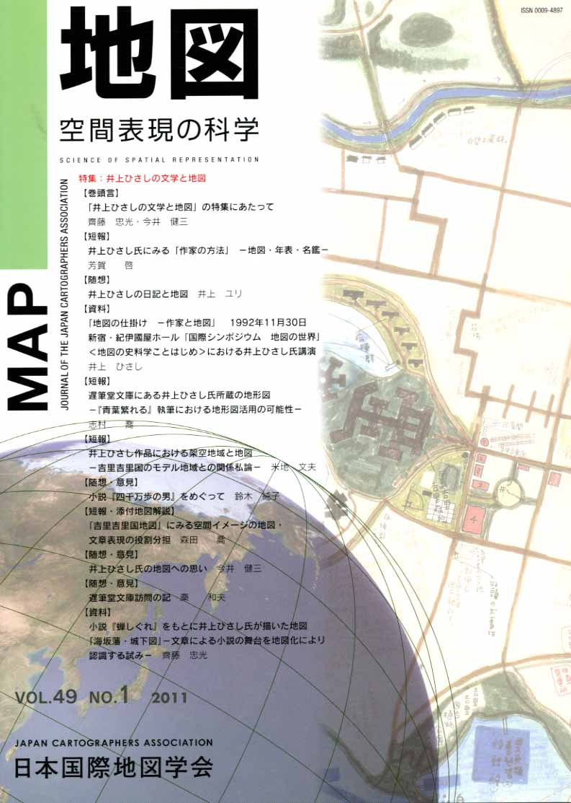
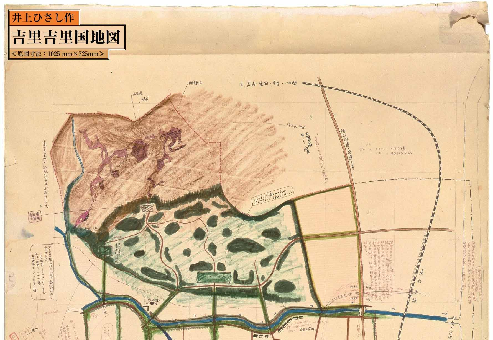

| 最 新 号 | バックナンバー | 添付地図目録 | 投 稿 規 程 |
Vol.49 No.1 （通巻１９３号） ２０１１年 《特集：井上ひさしの文学と地図》
| 【巻頭言】 | 「井上ひさしの文学と地図」の特集にあたって | 齊藤忠光・今井健三 |
| キーワード：井上ひさし、遅筆堂文庫、四千万歩の男、地図ゲーム、手描き地図、吉里吉里国地図 | ||
| 【短報】 | 井上ひさし氏にみる「作家の方法」 −地図・年表・名鑑− | 芳賀 啓 |
| キーワード：国際シンポジウム、地図の史料学、創作と物語世界の地図化 | ||
| 【随想】 | 井上ひさしの日記と地図 | 井上ユリ |
| 【資料】 |
「地図の仕掛け −作家と地図」 1992年11月30日 新宿・紀伊國屋ホール「国際シンポジウム 地図の世界」 ＜地図の史料学ことはじめ＞における井上ひさし氏講演 |
井上ひさし |
| キーワード：井上ひさし、地図の世界、地図の史料学、作家と地図 | ||
| 【短報】 | 遅筆堂文庫にある井上ひさし氏所蔵の地形図 −『青葉繁れる』執筆における地形図活用の可能性− | 志村 喬 |
| キーワード：小説家、地図、仙台市、地図学習、地理学習 | ||
| 【短報】 | 井上ひさし作品における架空地域と地図 −吉里吉里国のモデル地域との関係私論− | 米地文夫 |
| キーワード：井上ひさし、吉里吉里国地図、架空地域、宮城・岩手県境、メタフィクション、NationとLand | ||
| 【随想・意見】 | 小説『四千万歩の男』をめぐって | 鈴木純子 |
| キーワード：井上ひさし、伊能忠敬、四千万歩の男、遅筆堂文庫、測量日記 | ||
| 【短報・添付地図解説】 | 「吉里吉里国地図」にみる空間イメージの地図・文章表現の役割分担 | 森田 喬 |
| キーワード：井上ひさし、空間イメージ、文章表現、地図表現、位置関係 | ||
| 【随想・意見】 | 井上ひさし氏の地図への思い | 今井健三 |
| キーワード：井上ひさし、地図の本質、地図と言葉、伊能図、手描き地図 | ||
| 【随想・意見】 | 遅筆堂文庫訪問の記 | 秦 和夫 |
| 【資料】 | 小説『蝉しぐれ』をもとに井上ひさし氏が描いた地図「海坂藩・城下図」 −文章による小説の舞台を地図化により認識する試み− | 齊藤忠光 |
| キーワード：井上ひさし、蝉しぐれ、海坂藩・城下図、文学と地図、小説の舞台の地図化 | ||
| 【特別会員名簿】 | ||
| 【リレーメッセージ：地図・地図学への思い】 | 私にとっての地図の先生 | 正井泰夫 |
| 【学会記事】 | ||
| 【添付地図】 | 吉里吉里国地図 | |
|
≪No.49 No.1 表紙≫ |
||
|  |
|
|
|
≪No.49 No.1 添付地図≫ |
| 
本図を許可なく複製・利用することを禁止します。
|